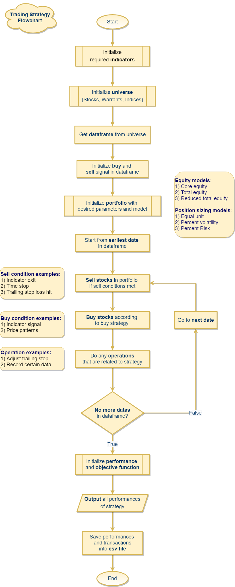
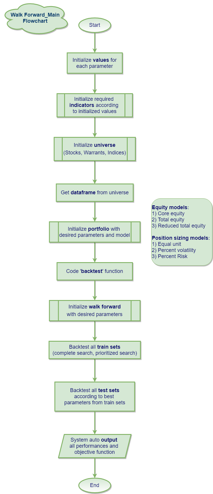
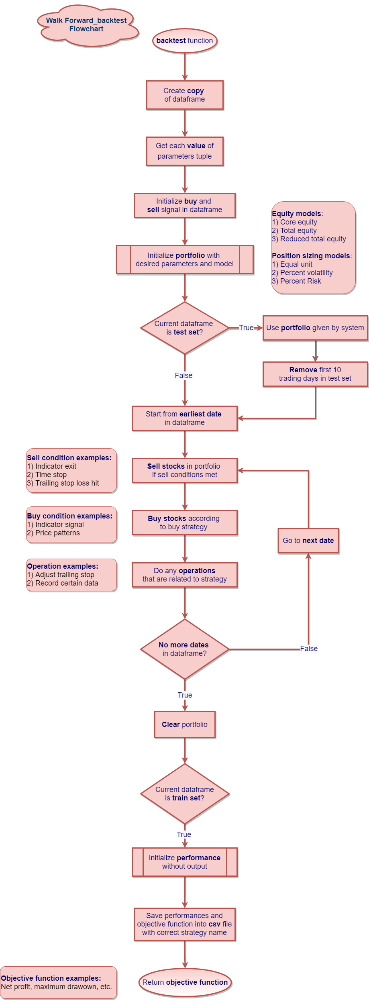

flowchart documentation
Flowchart: Trading strategy
Flowchart: walk forward - main
Flowchart: walk forward - backtest
Hyperlinks to documentation
Data module: Data
Performance module:Performance
Portfolio module: Portfolio
Indicator module:Indicator
Selection module:Selection
Walk forward module:Walk forward